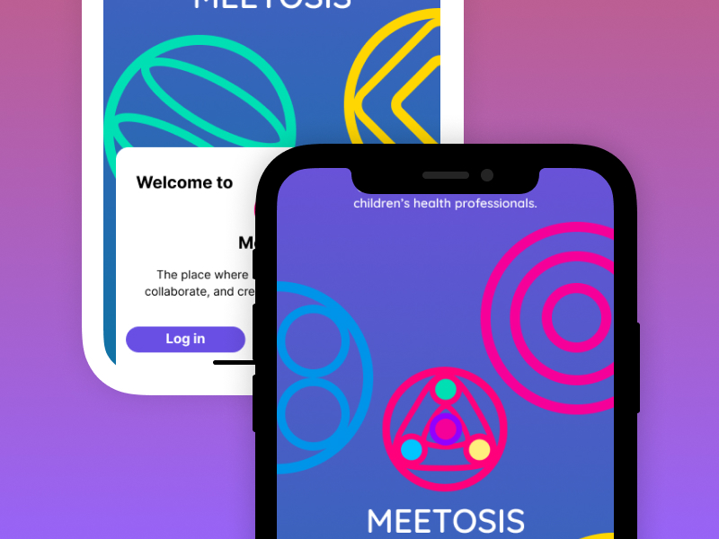
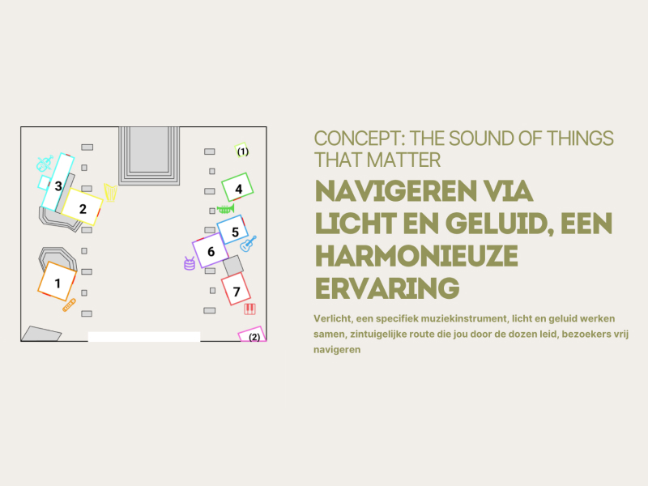
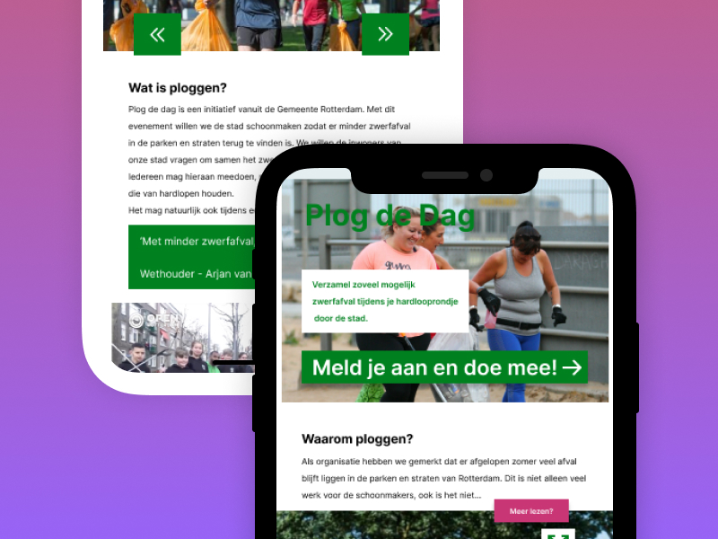
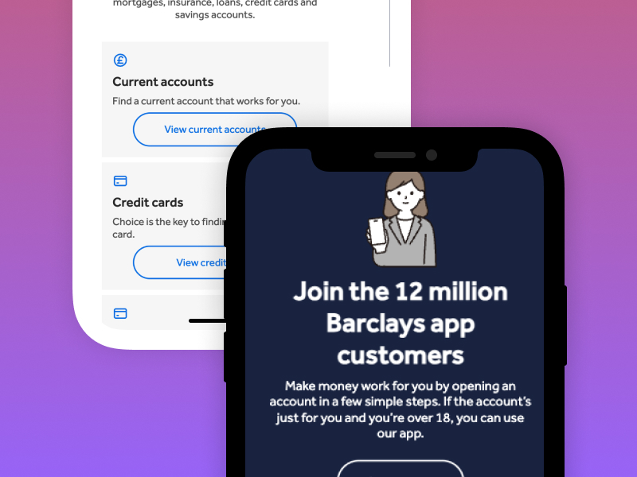
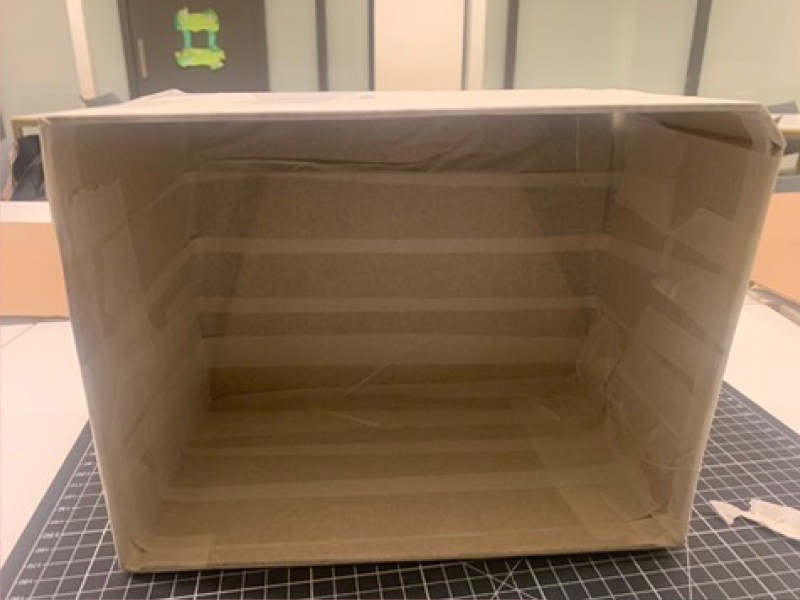
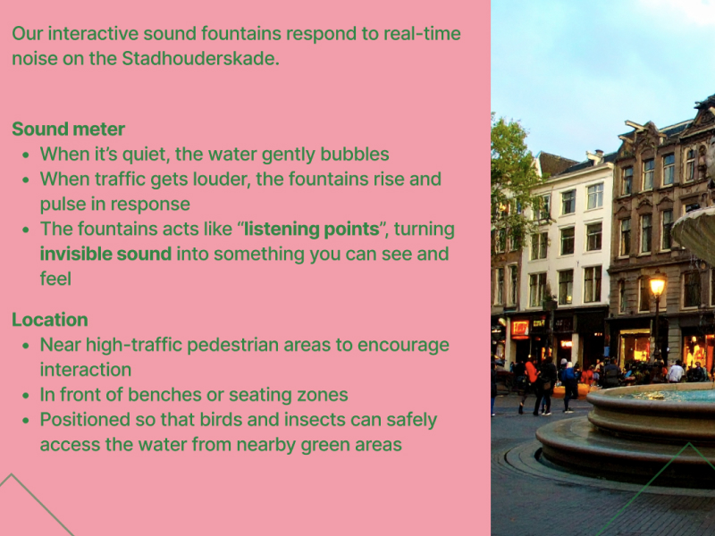
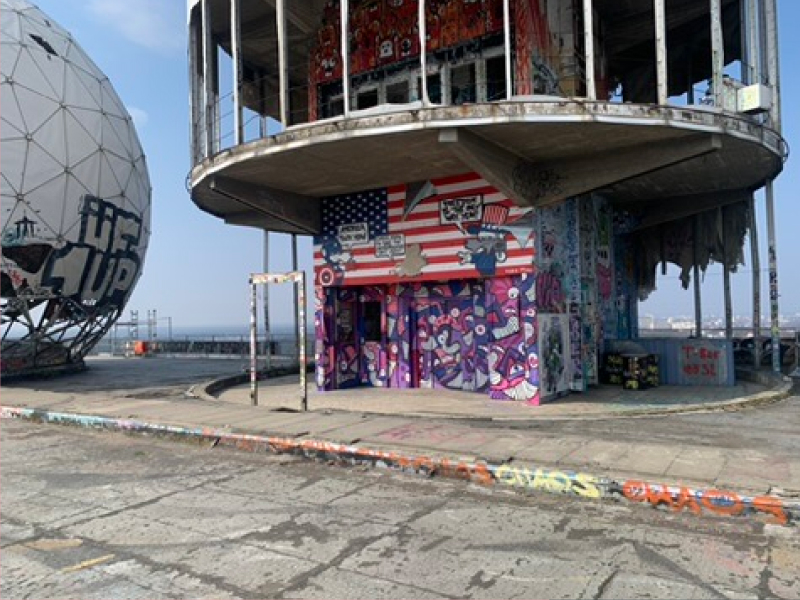
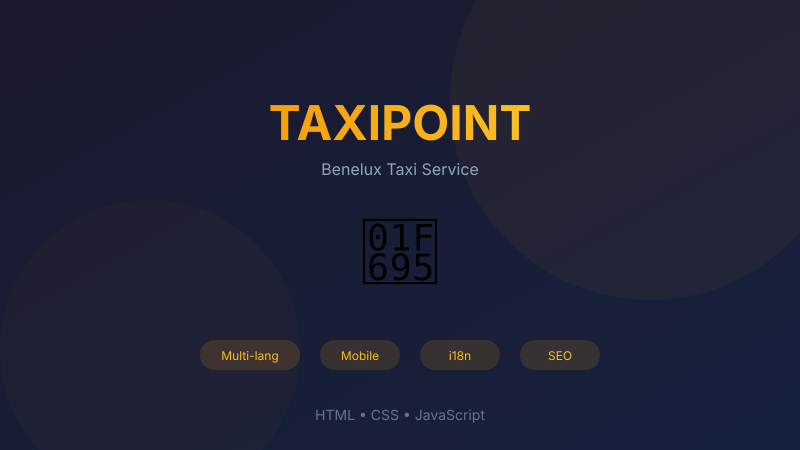
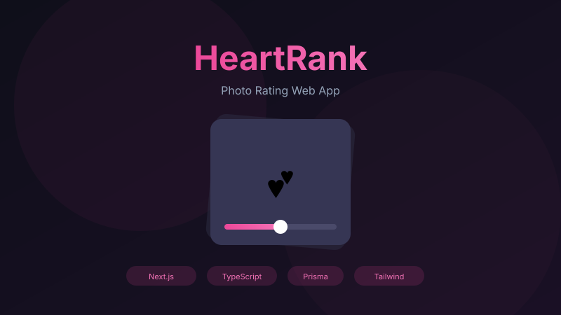
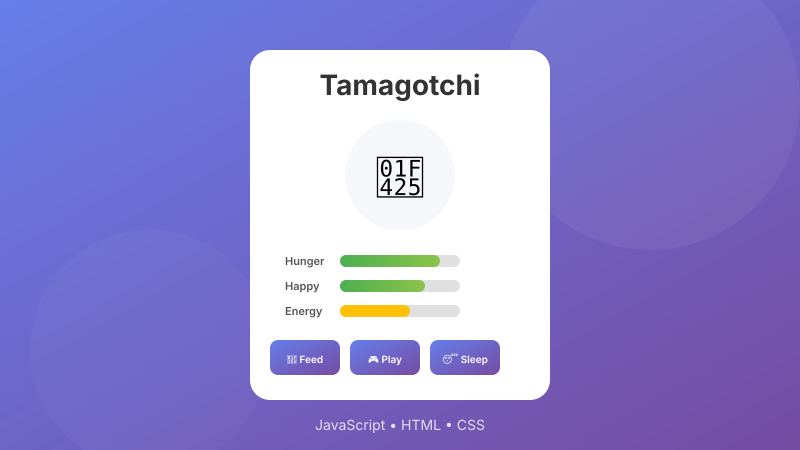

Meetosis
Concept app for pediatric doctors and researchers to find collaborators, events, and research opportunities.
A selection of fun projects I've worked on.

Concept app for pediatric doctors and researchers to find collaborators, events, and research opportunities.

Designing a multisensory route for “The Things That Matter” using scent, sound, and visual wayfinding.

Responsive website concept for a Rotterdam clean-up event.

Recreated two Barclays pages with semantic HTML, clean CSS, and a theme toggle using JavaScript.

Exploring the history of Amsterdam's canals through design.

Designing cities through behavior, technology, and observation.

Understanding urban atmosphere in Amsterdam & Berlin.

Modern, responsive taxi service website with multi-language support and dark/light mode.

Experimental MVP where users rate profiles 1–10 with Tinder-style interface and live leaderboard.

Browser-based virtual pet game with stat management, pet evolution, and random events.

Certified in Google Analytics 4 with hands-on experience implementing data tracking.